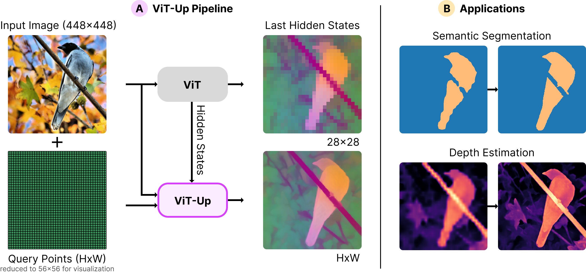
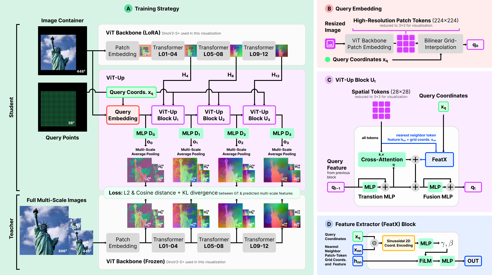
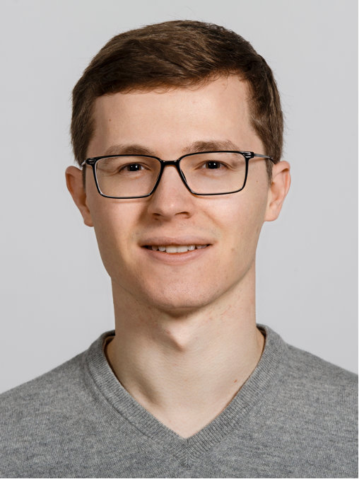
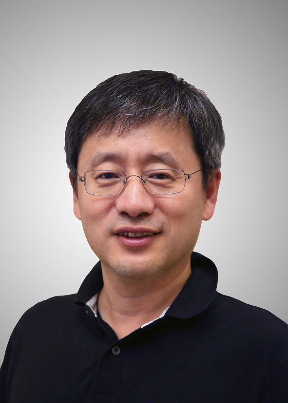

ViT-Up
Faithful Feature Upsampling for Vision Transformers
model = torch.hub.load(
"krispinwandel/vit-up",
"vit_up_dinov3_splus",
pretrained=True,
trust_repo=True,
).eval()
query_features = model(pixel_values, query_coords)
65.41Cityscapes mIoU+2.07 vs. best baseline
55.44SPair-71k PCK@0.10+4.17 vs. best baseline
62.72COCO depth δ1+0.55 vs. best baseline
80.81NAVI PCK@0.10+0.50 vs. best baseline
Method
ViT-Up builds query features from intermediate ViT hidden states, reducing feature leakage while preserving alignment with the backbone feature space.

Result Highlights
Across dense prediction and correspondence benchmarks, ViT-Up consistently improves over state-of-the-art image-guided upsamplers, with gains up to +2.07 mIoU on Cityscapes and +4.17 PCK@0.10 on SPair-71k using DINOv3-S+.
Best semantic segmentation gain
+2.07
Cityscapes mIoU
Best depth improvement
+1.33
COCO RMSE reduction
Best semantic correspondence gain
+5.11
SPair-71k PCK@0.05
Best geometric correspondence gain
+0.50
NAVI PCK@0.10
| Method | COCO Seg. | VOC | ADE20K | Cityscapes | COCO Depth | |||||
|---|---|---|---|---|---|---|---|---|---|---|
| mIoU ↑ | Acc ↑ | mIoU ↑ | Acc ↑ | mIoU ↑ | Acc ↑ | mIoU ↑ | Acc ↑ | δ1 ↑ | RMSE ↓ | |
| Bilinear | 63.10 | 81.85 | 84.88 | 96.45 | 43.27 | 76.17 | 61.36 | 93.44 | 61.52 | 62.80 |
| JAFAR | 62.50 | 81.50 | 83.88 | 96.16 | 42.48 | 75.81 | 57.78 | 92.47 | 60.64 | 64.92 |
| AnyUp | 63.03 | 81.83 | 84.54 | 96.34 | 42.77 | 76.02 | 58.96 | 92.93 | 61.66 | 62.62 |
| UpLiFT | 63.79 | 82.28 | 85.69 | 96.72 | 44.24 | 76.71 | 63.08 | 93.94 | 61.84 | 61.79 |
| NAF | 63.86 | 82.33 | 85.84 | 96.72 | 44.17 | 76.69 | 63.34 | 94.13 | 62.17 | 61.15 |
| ViT-Up (Ours) | 64.09 | 82.49 | 87.47 | 97.14 | 44.73 | 77.06 | 65.41 | 94.73 | 62.72 | 59.82 |
| Gain vs. best baseline | +0.23 | +0.16 | +1.63 | +0.42 | +0.49 | +0.35 | +2.07 | +0.60 | +0.55 | +1.33 |
| Method | SPair-71k | NAVI | ||||
|---|---|---|---|---|---|---|
| 0.10 ↑ | 0.05 ↑ | 0.01 ↑ | 0.10 ↑ | 0.05 ↑ | 0.01 ↑ | |
| Bilinear | 51.27 | 33.74 | 3.83 | 80.16 | 51.18 | 33.58 |
| JAFAR | 36.82 | 18.59 | 1.89 | 79.04 | 47.02 | 26.60 |
| AnyUp | 37.63 | 19.31 | 1.97 | 80.31 | 48.78 | 28.37 |
| UpLiFT | 46.87 | 29.15 | 3.43 | 79.35 | 49.05 | 30.49 |
| NAF | 48.68 | 33.96 | 2.89 | 80.03 | 50.29 | 31.62 |
| ViT-Up (Ours) | 55.44 | 39.07 | 7.30 | 80.81 | 51.59 | 33.83 |
| Gain vs. best baseline | +4.17 | +5.11 | +3.47 | +0.50 | +0.41 | +0.25 |
People

Krispin Wandel
Krispin Wandel received the M.Sc. degree in computational science and engineering from ETH Zurich, Zurich, Switzerland. He is currently pursuing the Ph.D. degree with the Department of Automation, Shanghai Jiao Tong University, Shanghai, China, under the supervision of Prof. Hesheng Wang. His research interests include visual representation learning, dense prediction, semantic correspondence, and robotics.
Jingchuan Wang
Jingchuan Wang received the Ph.D., M.Phil. and B.Eng. degree in Control Theory and Control Engineering from the Shanghai Jiao Tong University (SJTU), Shanghai, China, in 2002, 2005 and 2014, respectively. Now, he is a Professor in the School of Automation and Intelligent Sensing, and Institute of Medical Robotics at SJTU. He is also an IEEE senior member. His research interests include service robot, mobile robot's localization and navigation.

Hesheng Wang
Hesheng Wang (Senior Member, IEEE) received the B.Eng. degree in electrical engineering from the Harbin Institute of Technology, Harbin, China, in 2002, and the M.Phil. and Ph.D. degrees in automation and computer-aided engineering from the Chinese University of Hong Kong, Hong Kong, in 2004 and 2007, respectively. He is currently a Distinguished Professor with the School of Automation and Intelligent Sensing, Shanghai Jiao Tong University, Shanghai, China. His research interests include visual servoing, intelligent robotics, computer vision, and autonomous driving. Dr. Wang is an Associate Editor of Robotic Intelligence and Automation and the International Journal of Humanoid Robotics, a Senior Editor of the IEEE/ASME Transactions on Mechatronics, and Editor-in-Chief of Robot Learning. He served as an Associate Editor of IEEE Transactions on Robotics from 2015 to 2019 and IEEE Transactions on Automation Science and Engineering from 2021 to 2023. He was the General Chair of IEEE/RSJ IROS 2025, IEEE ROBIO 2022, and IEEE RCAR 2016.